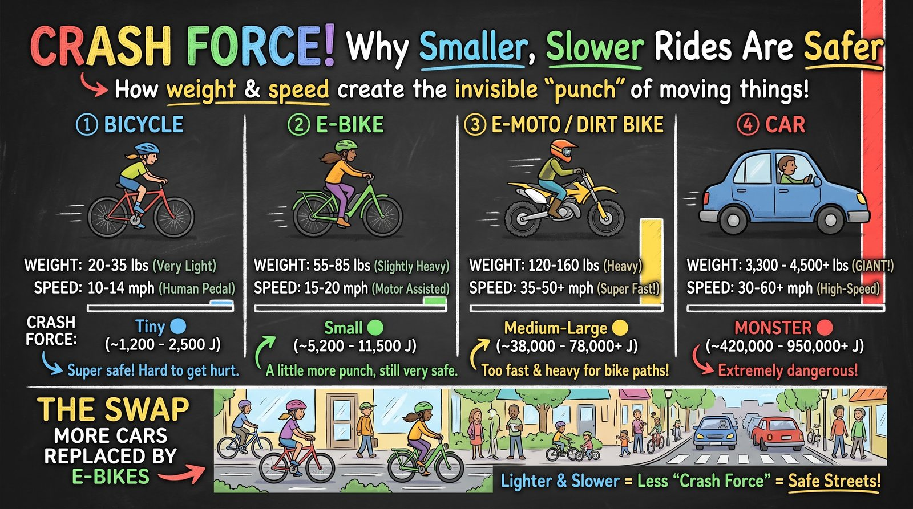
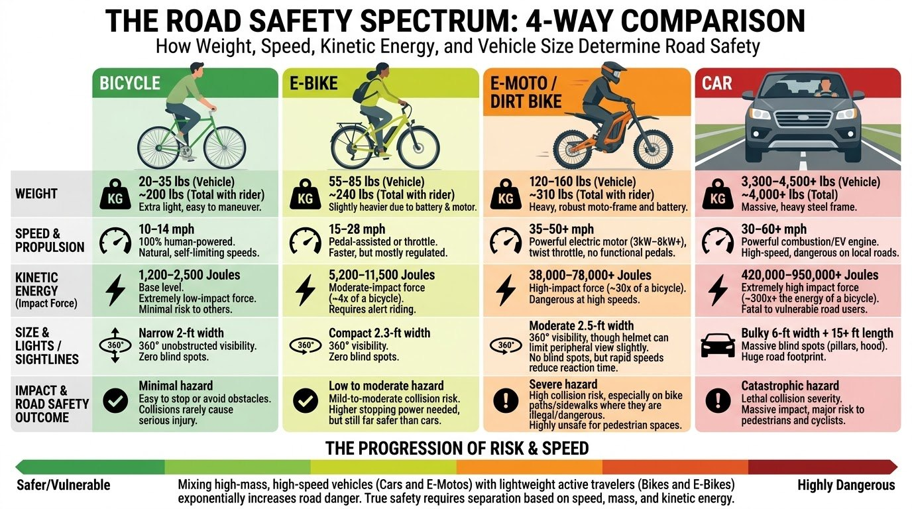

🎧 Listen to this post (about 4 min)
Trouble playing? Open the audio in a new tabHave you ever wondered why intersections in busy cities can feel so intense, or why some vehicles feel so much scarier than others when you are crossing the street? It all comes down to an invisible superpower that every moving thing has: kinetic energy.
To make that easier to picture, let's call it "Crash Force" (or "Ouch Energy").
Crash Force is the amount of punch an object carries when it is moving. The rules are simple: the heavier you are and the faster you go, the bigger your Crash Force. And speed counts extra: going twice as fast gives you four times the Crash Force! If you crash, all of that energy has to go somewhere, and that is what causes damage and injuries.
Let's look at how this changes across four different ways of getting around our neighborhoods, and why replacing bigger, faster vehicles with lighter ones makes everyone safer.

The Crash Force Lineup (Heavy vs. Light, Fast vs. Slow)
To see how Crash Force multiplies, let's compare four types of rides as if they were moving down your street. (Each Crash Force number includes the weight of the rider or driver.)
1. The Regular Bicycle: The Safe Neighbor 🚲
- Weight: Super light (around 20–35 lbs, about 200 lbs with you on it).
- Speed: Gentle (usually 10–14 mph, as fast as you can pedal with your own muscles).
- Crash Force: Tiny (about 900 to 1,800 joules).
The Safety Story: Because a regular bicycle is so light and doesn't go very fast, it carries very little Crash Force. When a bike bumps into someone, the result is far more likely to be a scrape or a bruise than a life-changing injury, and it can stop in just a few feet.
2. The Commuter E-Bike: The Helpful Middle Ground 🚲⚡
- Weight: A bit heavier (55–85 lbs because of its battery and motor, about 240 lbs with a rider).
- Speed: Moderate (usually 15–20 mph; Class 1 and 2 motors stop helping at 20 mph).
- Crash Force: Small (about 2,400 to 4,400 joules).
The Safety Story: E-bikes are heavier and go a bit faster than regular bikes, so their Crash Force is about 2 to 3 times bigger. Riders need to be a little more careful, but e-bikes are still small, agile and quick to slow down. That's why Class 1 and 2 e-bikes are welcome on the Bikeway at the 15 mph trail limit. (A Class 3 e-bike at its 28 mph top assist reaches about 8,500 joules, which is why Class 3 belongs on the road.) For comparison, a car at 35 mph carries roughly 50 to 90 times more Crash Force than an e-bike.
3. E-Motos & Dirt Bikes: The Fast Guests 🏍️💥
- Weight: Quite heavy (120–160 lbs of sturdy metal and bigger batteries, about 310 lbs with a rider).
- Speed: Fast (often 35–50+ mph, with no pedals needed, just twist and go!).
- Crash Force: Medium-large (about 17,000 to 35,000+ joules).
The Safety Story: Because these off-road-style electric bikes are heavy and can keep up with car traffic, their Crash Force jumps to as much as 27 times more than a regular bicycle! With that much energy they are far too fast and heavy for bike paths or sidewalks, and they should be treated like motorcycles. (More on that in Real E-Bikes vs. "E-Motos".)
4. The Passenger Car: The Monster on the Road 🚗👹
- Weight: MASSIVE (3,300 to 4,500+ lbs, about as heavy as a rhino!).
- Speed: High (30–60+ mph).
- Crash Force: MONSTER-SIZED (about 160,000 to 650,000+ joules).
The Safety Story: A car going 35 mph has about 170 times more Crash Force than a regular bike! At highway speed (60 mph), that grows to about 500 times. A collision at this scale is extremely dangerous. Cars also have large blind spots (places where the driver can't see you) and need a long distance to stop.
Crash Force at a Glance
| Ride | Total weight | Speed | Crash Force | vs. a bicycle |
|---|---|---|---|---|
| Bicycle | ~200 lbs | 10–14 mph | ~900–1,800 J | 1× |
| E-bike | ~240 lbs | 15–20 mph | ~2,400–4,400 J | ~2–3× |
| E-moto / dirt bike | ~310 lbs | 35–50+ mph | ~17,000–35,000+ J | ~13–27× |
| Car | ~4,000 lbs | 30–60+ mph | ~160,000–650,000+ J | ~170× at 35 mph, ~500× at 60 mph |
Crash Force = ½ × mass × speed², using total weight with the rider or driver. Comparisons use a bicycle at 12 mph (about 1,300 J).

The Big Takeaway: If We Swapped Cars for E-Bikes...
Imagine if we replaced most of the cars on your street with commuter e-bikes and regular bicycles. What would happen?
- A Giant Drop in Crash Force: We would be swapping monster-sized energy (cars) for small, manageable energy (bikes and e-bikes), often 50 to 100 times less. Crashes would still happen, but they would be far less severe.
- More Space to Move: You can fit 6 to 8 bicycles in the space of one parked car. That means less crowding, less traffic and more room for people!
- Better Views for Everyone: On a bike you sit up high with an open view all around you, and there is no long hood or tall front grille hiding a child stepping into the street.
By choosing lightweight, human-scaled vehicles like e-bikes for more of our trips, we can turn busy, scary roads back into peaceful neighborhood streets. Let's choose the safe, lightweight path!
What do you think? Would you feel safer walking in a neighborhood with more e-bikes and fewer cars? Tell us next time you stop by the shop or ride with us on the Bikeway.
— Patrick T. Simms
Owner & Operator, Cruise the Creek Adventures